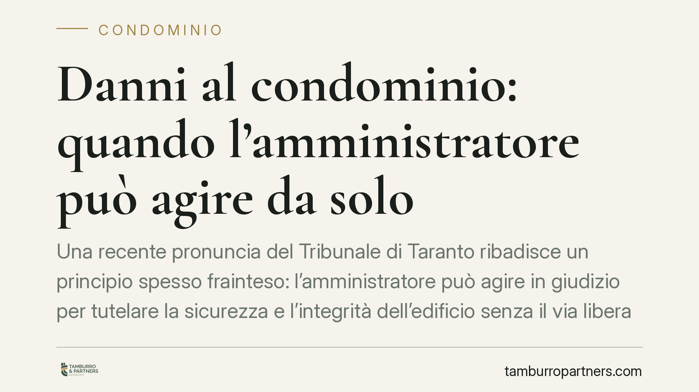

Danni al condominio: quando l'amministratore può agire da solo
Una recente pronuncia del Tribunale di Taranto ribadisce un principio spesso frainteso: l'amministratore può agire in giudizio per tutelare la sicurezza e l'integrità dell'edificio senza il via libera dell'assemblea. Il limite resta però netto, e distinguere gli atti conservativi da quelli straordinari evita ricorsi inammissibili e responsabilità personali.

Il caso
Il Tribunale di Taranto, Sezione I, è tornato su un tema ricorrente nel contenzioso condominiale: i poteri dell'amministratore quando l'edificio subisce danni. La questione nasce quasi sempre allo stesso modo. L'amministratore avvia un'azione giudiziaria per contestare vizi costruttivi o danni alle parti comuni e la controparte, spesso l'impresa appaltatrice, eccepisce il difetto di legittimazione: l'amministratore non avrebbe avuto il potere di agire senza una delibera assembleare.
Il Tribunale respinge questa lettura restrittiva, confermando un orientamento consolidato. Per gli atti diretti a conservare le parti comuni e a tutelare la sicurezza dell'edificio, l'amministratore agisce in autonomia.
Inquadramento normativo
La chiave sta nella lettura combinata degli articoli 1130 e 1131 del Codice civile. L'art. 1130, n. 4, attribuisce all'amministratore il compito di "compiere gli atti conservativi relativi alle parti comuni dell'edificio". Per *atto conservativo* si intende ogni iniziativa volta a mantenere l'integrità, la funzionalità e la sicurezza del bene comune: dalla messa in sicurezza di un cornicione pericolante all'azione per far cessare un danno in corso.
L'art. 1131, primo comma, completa il quadro sul piano processuale: nei limiti delle attribuzioni dell'art. 1130, l'amministratore ha la rappresentanza dei condomini e può agire in giudizio sia contro i condomini sia contro i terzi. In altre parole, quando l'azione rientra tra i suoi compiti istituzionali, la legittimazione è automatica e non richiede alcuna autorizzazione preventiva.
Discorso diverso per le azioni che esorbitano dall'ordinaria amministrazione. In questi casi opera il meccanismo dell'art. 1131, terzo comma, e serve il mandato dell'assemblea. Rientra qui, tipicamente, la domanda risarcitoria complessa o l'azione fondata sulla garanzia decennale dell'art. 1669 c.c. per gravi difetti dell'opera, quando l'iniziativa supera la mera conservazione del bene.
L'art. 1133 chiude il cerchio: i provvedimenti dell'amministratore sono obbligatori per i condomini, ma restano impugnabili davanti all'assemblea, senza che ciò sospenda l'efficacia dell'atto.
Implicazioni pratiche
Per l'amministratore la distinzione non è teorica. Agire oltre i propri poteri espone al rischio che l'azione venga dichiarata inammissibile, con aggravio di costi a carico del condominio e possibile responsabilità personale per la gestione.
Per i condomini il principio è una garanzia: di fronte a un pericolo per la sicurezza dell'edificio, l'amministratore non può restare inerte aspettando la prossima assemblea. L'intervento conservativo è un dovere, non una facoltà discrezionale.
Per l'impresa appaltatrice che riceve una contestazione, l'eccezione di difetto di legittimazione va ponderata con attenzione: se l'azione ha natura conservativa, l'eccezione è destinata al rigetto e rischia di apparire meramente dilatoria.
Il confine, nei casi concreti, resta sottile. Un'azione che parte come tutela conservativa può evolvere verso una domanda risarcitoria di ampio respiro, modificando i presupposti della legittimazione. Per questo la qualificazione dell'azione va definita con precisione sin dall'atto introduttivo.
Cosa fare in concreto
- Qualificate l'azione prima di agire. Verificate se l'iniziativa è un atto conservativo ex art. 1130, n. 4, o se supera l'ordinaria amministrazione: dalla risposta dipende la necessità della delibera.
- In caso di dubbio, convocate l'assemblea. Una ratifica preventiva mette l'azione al riparo da eccezioni di inammissibilità, soprattutto per domande risarcitorie o fondate sull'art. 1669 c.c.
- Documentate l'urgenza e il pericolo. Per gli interventi conservativi, perizie e verbali di sopralluogo rafforzano la qualificazione dell'atto e la posizione processuale del condominio.
- Impresa appaltatrice: valutate la natura della domanda prima di sollevare il difetto di legittimazione, per non incorrere in un'eccezione infondata.
- Consigliamo di distinguere sempre tra messa in sicurezza e risarcimento, anche quando le due esigenze coesistono: possono richiedere percorsi processuali diversi.
La pronuncia tarantina non introduce novità rivoluzionarie, ma offre un promemoria utile. La linea di confine tra autonomia dell'amministratore e competenza assembleare va tracciata caso per caso, con attenzione alla reale natura dell'azione.
---
*Contributo informativo a cura di Tamburro & Partners - Avv. Giuseppe Tamburro. Non costituisce parere legale.*
Ogni condominio ha una storia a sé.
Se gestisci un'amministrazione e vuoi un confronto su una specifica questione condominiale, scrivi allo studio. Ti rispondiamo entro un giorno lavorativo.